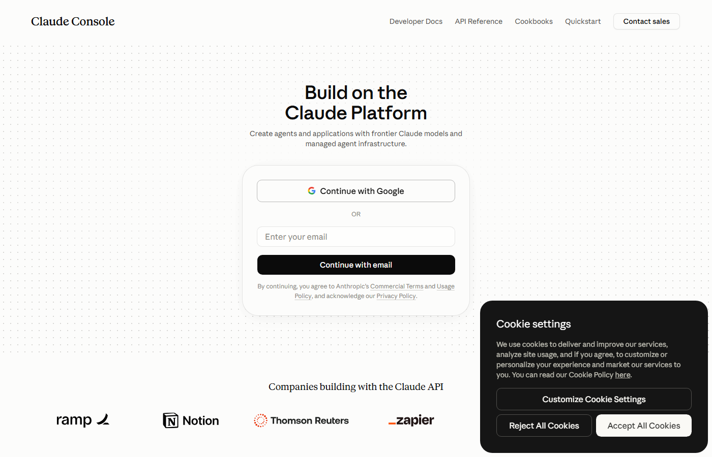

Claude.ai — это интерфейс над API. Напрямую через API вы получаете тот же интеллект, но встроенный в своё приложение, своего бота, свой сервис. И платите не фиксированную подписку, а ровно столько, сколько реально используете.
Это не замена — это параллельный инструмент. Pro-подписка и API работают независимо друг от друга.
| Claude Pro (подписка) | API (по факту) | |
|---|---|---|
| Оплата | Фиксированно/мес | За каждый запрос |
| Использование | Вы вручную в браузере | Ваш код, ваши приложения |
| Лимит | ~5 часов работы | Нет лимита — только баланс |
| Для чего | Ежедневная работа | Агенты, боты, интеграции |
| Минимальный старт | По тарифу | $5 |
Агент — это сложная задача. High Effort = Claude думает дольше, делает меньше ошибок в архитектуре.
Прежде чем начать строить — получите архитектурный план. Архитектор рисует чертёж до того, как начинается стройка.
Это отдельный сайт — не claude.ai. Но аккаунт тот же. Зайдите через тот же email/Google.

Billing → Add credits. Та же карта, что привязана к аккаунту Claude.
Придумайте говорящее название: «smm-agent», «tracker-app».
Ключ начинается с sk-ant-. После закрытия окна увидеть его снова нельзя — только создать новый.
Создайте файл .env в папке → напишите ANTHROPIC_API_KEY=ваш_ключ → закройте файл. Claude Code прочитает его сам.
API-ключ — не паспорт. Это абонемент: документ, который даёт право пользоваться услугами за ваш счёт. Утерянный абонемент можно отозвать в любой момент.
| Что видит владелец ключа | Что НЕ видит |
|---|---|
| Может делать запросы к Claude API | Ваши переписки в Claude.ai |
| Тратит ваш баланс | Данные вашей карты |
| Может создавать другие ключи (если admin) | Другие ключи в аккаунте |
| Формат | Аудитория | Сложность |
|---|---|---|
| Веб-сайт с кнопками | Все по ссылке | Урок 8 |
| Telegram-бот | Пользователи Telegram | Урок 11 |
| Виджет поддержки | Посетители сайта клиента | Средняя |
| Несколько агентов | Разные роли, один баланс | Один ключ, разные папки |